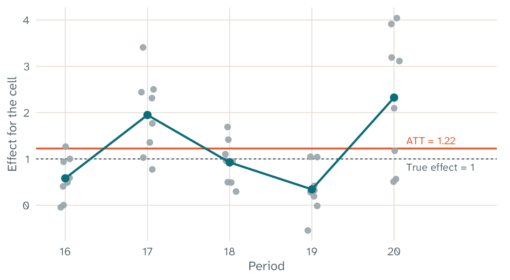
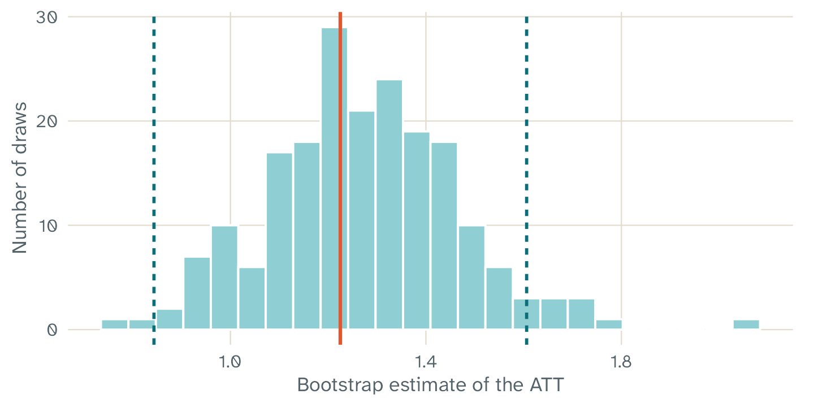

Key points
- The ATT is the mean effect of the treatment on all treated cells.
- The standard error and the interval come from a bootstrap. They are reliable only with many treated units.
- The tuning parameters show how much each of the three ideas of TROP counts in your data.
- Each warning message has a meaning and an action. The table at the end of this article gives both.
A fit to read
This article uses the example from the home page. It is a practice
panel with 40 units and 20 periods. Eight units get the treatment in the
last 5 periods, and the true effect is 1 in each treated cell. By
default, trop_simulate() uses a hidden factor loading in
the selection of the treated units. In this panel, the treated units
follow a hidden pattern more strongly than the untreated units.
library(fasttrop)
panel <- trop_simulate(n_units = 40, n_periods = 20, n_treated = 8, n_post = 5,
seed = 1)
fit <- trop(panel, outcome = "y", treatment = "d", unit = "unit", time = "time",
cv_cells = 200, n_boot = 200, seed = 1)
summary(fit)
#> Triply Robust Panel (TROP) estimate
#> Method: local | Design: block | Units: 40 | Periods: 20 | Treated cells: 40
#> ATT: 1.225 (SE 0.1945, 95% CI 0.8435 to 1.606)
#> lambda: time = 0, unit = 1, nn = 0.1
#> Tuning: loocv, score 99.73, 28 grid evaluations
#> Bootstrap: 200 draws (stratified), 0 failed, normal interval
#> Treated units: 8 | Skipped cells: 0 | Non-converged fits: 0
#> Time: 22.024 s in total, 22.015 s in the C code (4 threads)The first lines of the output give the method, the design, and the size of the panel. fasttrop finds the design from the treatment column. Make sure that the design is the design that you expect. If it is not, examine the treatment column of your data.
The ATT
The ATT is the average treatment effect on the treated. It is the mean of the effects for all treated cells, and each treated cell has the same weight. Thus, a unit with more treated periods counts more in the ATT.
To get the effect for each treated cell, use
as.data.frame():
effects <- as.data.frame(fit)
head(effects)
#> unit time tau
#> 1 1 16 0.002878558
#> 2 1 17 1.767293646
#> 3 1 18 1.689386082
#> 4 1 19 -0.543833005
#> 5 1 20 3.189546495
#> 6 8 16 1.000536355
The effect for each treated cell of the practice panel (grey dots), the mean for each period (teal line), and the ATT (coral line). The dashed line is the true effect of 1. The effects for single cells have much noise. The mean over many cells is more stable.
The effect for one cell is not a reliable estimate. Use the ATT, or the mean over a group of cells, for example all treated cells in one period.
The standard error and the interval
The standard error (SE) comes from a unit bootstrap. The resampling
follows Algorithm 3 of the paper. Each bootstrap draw takes a sample of
units with replacement. With the default
resample = "stratified", it takes the treated units and the
untreated units separately.
For each sample, fasttrop calculates the estimate again with the same tuning parameters. The paper does not say whether to select them again in each draw. The standard deviation of these estimates is the standard error.

The 200 bootstrap estimates of the practice panel. The coral line is the estimate. The teal lines are the limits of the 95% normal interval.
fasttrop has two types of interval:
- The normal interval is the default. It is the estimate plus and minus 1.96 standard errors, for a 95% interval.
- The percentile interval uses the 2.5% and 97.5% quantiles of the
draws. To get it, set
ci = "percentile". This is the interval of the Python package from the authors.
In our simulations, the normal interval had a coverage nearer to 95%. With a small number of draws, the percentile interval is less accurate. The article How we checked fasttrop gives the results.
Limits of the interval
- The paper says that the bootstrap is correct only with many treated units. For a panel with fewer than five treated units, fasttrop gives a warning message. Five or more treated units do not make the interval reliable.
- fasttrop keeps the tuning parameters fixed in the bootstrap. Thus, the interval does not include the variation that comes from the selection of the tuning parameters.
The tuning parameters
The line lambda gives the three tuning parameters. Each
one controls one of the three ideas of TROP:
| Parameter | What it controls | A value of 0 or Inf
|
|---|---|---|
time |
How fast the time weights decrease with the distance from the treated period | 0 gives the same weight to all periods |
unit |
How fast the unit weights decrease when the history of a unit is different from the treated unit | 0 gives the same weight to all units |
nn |
The penalty on the low-rank term, which holds the hidden patterns |
Inf removes the low-rank term |
With time = 0, unit = 0, and
nn = Inf, TROP gives the same result as TWFE imputation.
This method fits two-way fixed effects (TWFE) to the untreated cells
only.
The line Tuning in the summary gives the criterion, the
score of the selected values, and the number of grid points that the
search examined. A smaller score is better. The element
fit$cv$trace has the score of each grid point that the
search examined.
A comparison with TWFE imputation
A fit with TWFE imputation shows how much the three ideas of TROP change the result. To get this fit, set the tuning parameters to the TWFE values:
twfe <- trop(panel, outcome = "y", treatment = "d", unit = "unit", time = "time",
lambda = c(time = 0, unit = 0, nn = Inf), n_boot = 200, seed = 1)
rbind(TROP = c(ATT = coef(fit), confint(fit)),
`TWFE imputation` = c(ATT = coef(twfe), confint(twfe)))
#> ATT.ATT
#> TROP 1.224808 0.8435055 1.60611
#> TWFE imputation 1.930423 1.3171848 2.54366In this practice panel, the ATT of TROP is 1.22, and the ATT of TWFE imputation is 1.93. The true effect is 1. Thus, the estimate of TROP differs from the true effect by 0.22, and the estimate of TWFE imputation differs by 0.93. One panel does not show the average bias of either method.
The practice panel has a block design with no NA
outcomes. Thus, the ATT of TWFE imputation is also the treatment
coefficient of a conventional TWFE regression. In a staggered design,
the two results can be different. The article How we checked fasttrop shows an example.
If the two results are very different, examine why. For example, the treated units can have a different trend from the untreated units. In our simulation B, TWFE imputation had a large bias in this case, and TROP also kept some bias. The article What TROP can and cannot do gives the details.
Warning messages and errors
fasttrop gives a warning message when you must use a result with care. The table gives each message, its meaning, and the action to take.
| Text in the message | What it means | What to do |
|---|---|---|
| Theorem 5.1 of the paper (triple robustness) has a proof only for a block design | The design is staggered or general. fasttrop calculates the estimate, but the triple robustness result has no proof for this design. | Report the design with the result. Do not use the triple robustness result as an argument for this design. |
| The treatment stops for some units | The design is general. The estimator assumes that the treatment has no effect after it stops. It also assumes that the effect does not change with the earlier treatment periods. | Make sure that these assumptions are reasonable for your data. |
| The bootstrap of Algorithm 3 is correct only with many treated units | The panel has fewer than five treated units. The standard error and the interval can be wrong. | Use the interval with care, and report the number of treated units. |
| The placebo cross-validation did not find a fixed point | The search for the tuning parameters of the global method stopped before the end. | Set a larger max_cycles, or set
lambda. |
| The estimator did not use | For these treated cells, the weighted untreated cells cannot give the unit effect and the period effect. An example is a period in which all units are treated. | Make sure that each treated unit has untreated periods, and that each treated period has untreated units. |
| N fit(s) did not converge | The solver stopped at its maximum number of iterations. N is the number of fits. | Set a larger max_iter in
trop_control(). |
| N of M bootstrap draws failed | Some bootstrap samples gave no estimate. The standard error and the interval use only the other draws. | Examine the panel for units with few untreated cells. |
Some errors stop the global method:
- The global method works only for a block design. For a staggered or
a general design, use
method = "local". - The global method must have at least two units that are never
treated. With cross-validation, it must also have more units that are
never treated than
placebo_size.
What to report
When you report a result from fasttrop, give these items:
- The method and the design.
- The ATT, the standard error, the type of interval, and the number of bootstrap draws.
- The tuning parameters, and how you selected them.
- The number of treated units and treated cells.
- The version of fasttrop. The function
packageVersion("fasttrop")gives it.
Then write the result in plain words. For the practice panel, a report can say: “The estimated average effect of the treatment on the treated units was 1.22, with a 95% interval from 0.84 to 1.61.” Also give the design and any warning message. The interval shows the uncertainty of the estimate. It does not prove that the treatment caused the change. That conclusion also depends on the assumptions of the method.